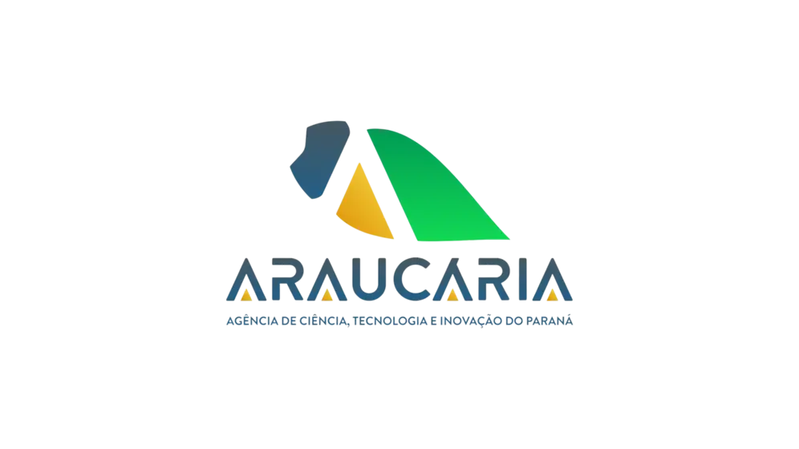
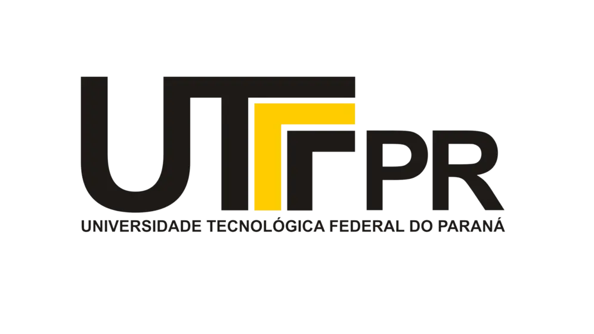
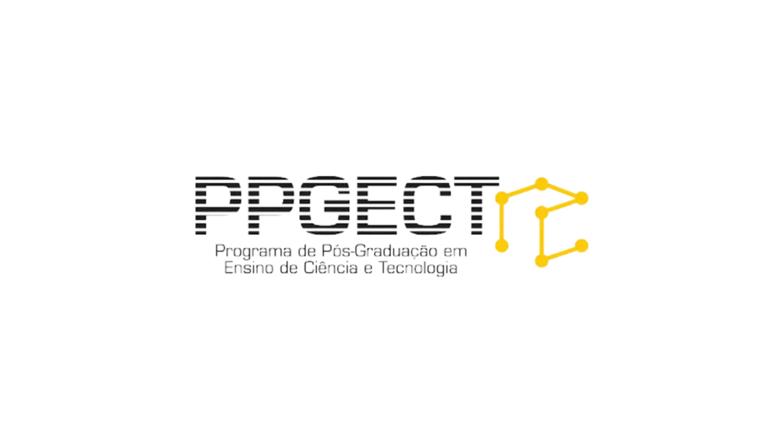
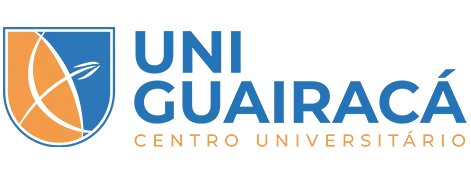
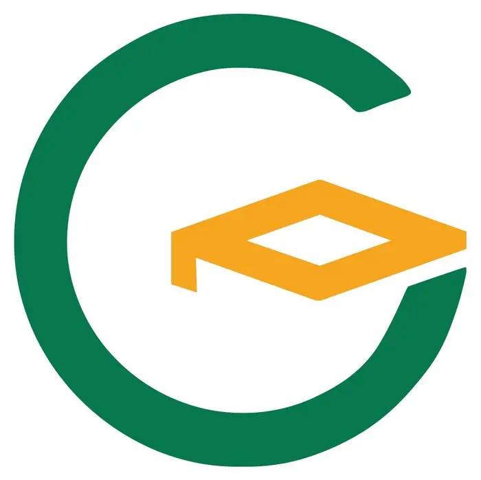

Instituições parceiras
Uma rede conectada por ciência, tecnologia, ensino e compromisso com a integridade acadêmica.
O projeto cresce com o apoio de instituições que ampliam o alcance da formação e fortalecem a pesquisa responsável no Paraná.

Fundação Araucária
Fundação de amparo à pesquisa que investe em ciência, tecnologia e inovação para contribuir com o desenvolvimento social, econômico e ambiental do Paraná.

UTFPR
Universidade pública com presença em várias cidades do Paraná e atuação reconhecida em engenharia, tecnologia, graduação e pós-graduação.
Campi parceiros: Cornélio Procópio, Dois Vizinhos, Pato Branco, Ponta Grossa, Santa Helena e Toledo.

PPGECT
O Programa de Pós-Graduação em Ensino de Ciência e Tecnologia oferece mestrado e doutorado, com atenção ao ensino formal em diferentes níveis educacionais.

UniGuairacá
Instituição de ensino superior estabelecida em Guarapuava em 2005, com oferta de cursos de graduação e pós-graduação.

Faculdade Guarapuava
Instituição de ensino superior inaugurada em 2000. Em 2005, criou o Instituto Paranaense de Tecnologia e passou a oferecer cursos superiores de tecnologia.